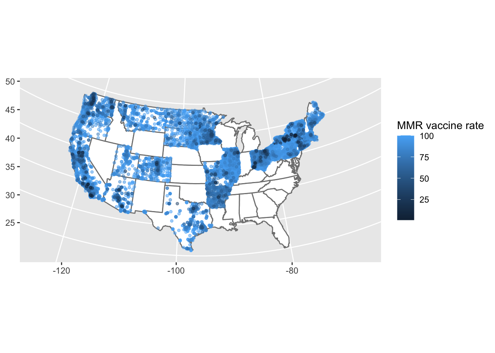
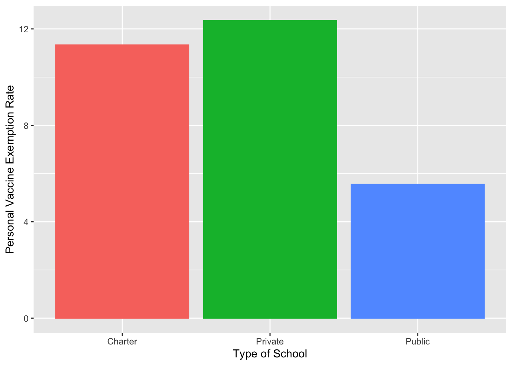
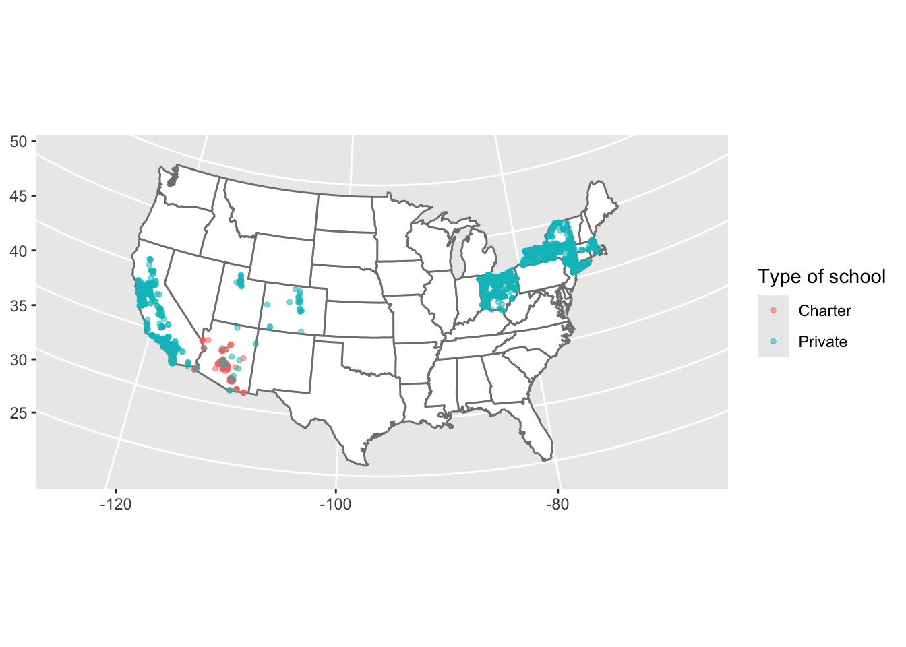
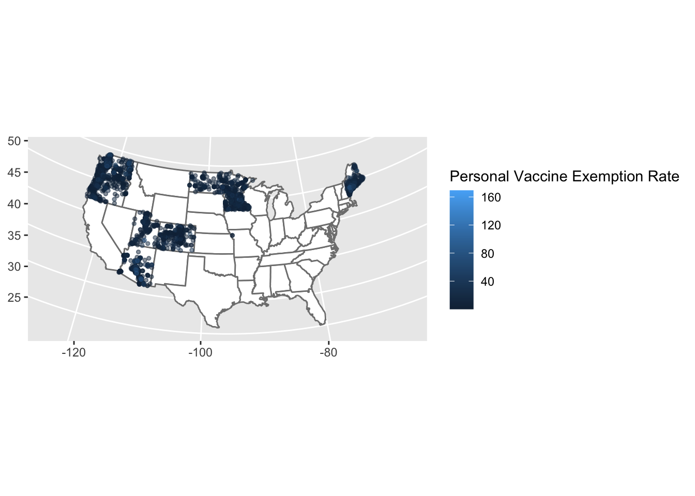

Portfolio 5: Visualizing Measles Vaccine Data
Overview:
Goal:
For this piece, I am interested in learning about measles vaccination rates in schools across the US and getting practice with creating maps in R.
Data:
I used a Tidy Tuesday dataset that contains information about measles vaccination rates from schools across 32 states. Main variables include the type of school (e.g., public, private, charter), the measles vaccination rate, rates of medical/religious/personal exemptions, and the locations of the schools (indicated by state, city, longitude, and latitude)
Product:
I created a series of maps and plots to better understand how vaccination rates and exemptions differ across states and different types of schools.
Interpretation:
Vaccination rates were relatively high across most states and were highest in public schools relative to private and charter schools. More detailed interpretations are included throughout the document.
Sources:
data: https://github.com/rfordatascience/tidytuesday/tree/main/data/2020/2020-02-25
I adapted code from my first-year project to create the US maps.
Loading packages
library(tidyverse)
library(tidyr)
library(tidytuesdayR)
library(maps)Reading in data
tuesdata <- tidytuesdayR::tt_load('2020-02-25')## ---- Compiling #TidyTuesday Information for 2020-02-25 ----
## --- There is 1 file available ---
##
##
## ── Downloading files ───────────────────────────────────────────────────────────
##
## 1 of 1: "measles.csv"tuesdata <- tidytuesdayR::tt_load(2020, week = 9)## ---- Compiling #TidyTuesday Information for 2020-02-25 ----
## --- There is 1 file available ---
##
##
## ── Downloading files ───────────────────────────────────────────────────────────
##
## 1 of 1: "measles.csv"measles <- tuesdata$measlesAverage vaccination rate by state
measles %>%
filter(mmr > 0) %>%
select(mmr, state) %>%
group_by(state) %>%
summarize(across(everything(), list(mean = mean))) %>%
arrange(desc(mmr_mean))## # A tibble: 21 × 2
## state mmr_mean
## <chr> <dbl>
## 1 Illinois 97.4
## 2 Massachusetts 97.0
## 3 Pennsylvania 96.9
## 4 Connecticut 96.8
## 5 California 96.4
## 6 New York 96.1
## 7 Utah 95.2
## 8 South Dakota 95.1
## 9 Vermont 94.6
## 10 Montana 94.4
## # ℹ 11 more rowsOf the states represented, Illinois had the highest average vaccination rate and Arkansas had the lowest average vaccination rate.
First attempt at mapping vaccination rates by state
us_map <- map_data("state")
ggplot() +
geom_polygon(data = us_map,
aes(x = long, y = lat, group = group),
fill = "white",
color = "gray50") +
geom_point(data = measles,
aes(x = lng,
y = lat,
color = mmr),
size = 1,
alpha = 0.8)
My first map ended up smushed to the left, and with a lot of extra points representing schools with missing data. I am going to filter the dataset to just include schools that have available vaccination data and will show up on my US map.
Second attempt
measles_filtered <- measles %>%
filter(lng < 0) %>%
filter(mmr > 0)
ggplot() +
geom_polygon(data = us_map,
aes(x = long, y = lat, group = group),
fill = "white",
color = "gray50") +
geom_point(data = measles_filtered,
aes(x = lng,
y = lat,
color = mmr),
size = 1,
alpha = 0.5) +
labs(x = NULL,
y = NULL,
color = 'MMR vaccine rate'
)
Much better, but still slightly off. I’m going to try once more, this time adding a line of code to set the map projection.
Third attempt
measles_filtered <- measles %>%
filter(lng < 0) %>%
filter(mmr > 0)
ggplot() +
geom_polygon(data = us_map,
aes(x = long, y = lat, group = group),
fill = "white",
color = "gray50") +
geom_point(data = measles_filtered,
aes(x = lng,
y = lat,
color = mmr),
size = 1,
alpha = 0.5) +
coord_map("albers", lat0 = 39, lat1 = 45) +
labs(x = NULL,
y = NULL,
color = 'MMR vaccine rate'
)
Better!
I’m seeing that overall, vaccination rates were relatively high, but there are some dark blue dots/regions that represent schools with low vaccination rates across the map.
I am also interested in seeing how vaccination rates differ across different types of schools.
Average vaccination rate by school type
measles_filtered %>%
filter(mmr > 0) %>%
select(mmr, type) %>%
group_by(type) %>%
summarize(across(everything(), list(mean = mean))) %>%
arrange(desc(mmr_mean))## # A tibble: 7 × 2
## type mmr_mean
## <chr> <dbl>
## 1 BOCES 98.8
## 2 Public 96.2
## 3 <NA> 94.5
## 4 Nonpublic 94.4
## 5 Kindergarten 94.2
## 6 Private 93.3
## 7 Charter 88.0#Saving as an object
mmr_type_summary <- measles_filtered %>%
filter(mmr > 0) %>%
select(mmr, type) %>%
group_by(type) %>%
summarize(across(everything(), list(mean = mean))) %>%
arrange(desc(mmr_mean))I want to focus on just public, private, and charter schools.
measles_type <- measles_filtered %>%
filter(type %in% c("Public", "Private", "Charter"))
mmr_type_summary <- measles_type %>%
filter(mmr > 0) %>%
select(mmr, type) %>%
group_by(type) %>%
summarize(across(everything(), list(mean = mean))) %>%
arrange(desc(mmr_mean))
mmr_type_summary %>%
ggplot(aes(x = type, y = mmr_mean, color = type, fill = type)) +
geom_col() +
labs(x = 'Type of School',
y = 'Average Vaccination Rate') +
theme(legend.position = "none")
Average vaccination rates were lowest on average in charter schools and highest on average in public schools. In line with these results, I found a paper (https://pubmed.ncbi.nlm.nih.gov/24795202/) that reported higher vaccine exemption rates in private schools relative to public schools. To see if this explanation applies to my findings, I am going to examine the data I have on medical, religious, and personal exemption rates.
Prevalence of vaccine exemptions by type of school
measles_type %>%
select(type, xrel, xmed, xper) %>%
group_by(type) %>%
summarize(across(everything(), list(mean = mean), na.rm = TRUE))## # A tibble: 3 × 4
## type xrel_mean xmed_mean xper_mean
## <chr> <dbl> <dbl> <dbl>
## 1 Charter NaN 1.67 11.3
## 2 Private 1 5.09 12.4
## 3 Public 1 2.34 5.55#Saving as object:
measles_x <- measles_type %>%
select(type, xrel, xmed, xper) %>%
group_by(type) %>%
summarize(across(everything(), list(mean = mean), na.rm = TRUE))The biggest differences in exemption rates by type of school were observed in personal exemptions, which were much higher for charter and private schools than public schools:
measles_x %>%
ggplot(aes(x = type, y = xper_mean, color = type, fill = type)) +
geom_col() +
labs(x = 'Type of School',
y = 'Personal Vaccine Exemption Rate') +
theme(legend.position = "none")
Now, I want to see if differences in the prevalence of private/charter schools and in personal vaccine exemptions vary by state in a manner similar to the overall vaccine rates.
Mapping private/charter schools by state
#Filtering to get just private/charter schools
measles_type2 <- measles_type %>%
filter(type %in% c("Private", "Charter"))
ggplot() +
geom_polygon(data = us_map,
aes(x = long, y = lat, group = group),
fill = "white",
color = "gray50") +
geom_point(data = measles_type2,
aes(x = lng,
y = lat,
color = type),
size = 1,
alpha = 0.5) +
coord_map("albers", lat0 = 39, lat1 = 45) +
labs(x = NULL,
y = NULL,
color = 'Type of school'
)
Unfortunately, the available data on charter and private schools was sparse.
Mapping personal exemption rates by state
measles_filtered_xper <- measles_filtered %>%
filter(!is.na(xper))
ggplot() +
geom_polygon(data = us_map,
aes(x = long, y = lat, group = group),
fill = "white",
color = "gray50") +
geom_point(data = measles_filtered_xper,
aes(x = lng,
y = lat,
color = xper),
size = 1,
alpha = 0.5) +
coord_map("albers", lat0 = 39, lat1 = 45) +
labs(x = NULL,
y = NULL,
color = 'Personal Vaccine Exemption Rate'
)
This is where I realized an error. The personal exemption rate is meant to be reported as a percentage, but it has values that go over 100%. I am going to filter to include only possible values:
measles_filtered_xper <- measles_filtered %>%
filter(!is.na(xper)) %>%
filter(xper < 100)
ggplot() +
geom_polygon(data = us_map,
aes(x = long, y = lat, group = group),
fill = "white",
color = "gray50") +
geom_point(data = measles_filtered_xper,
aes(x = lng,
y = lat,
color = xper),
size = 1,
alpha = 0.5) +
coord_map("albers", lat0 = 39, lat1 = 45) +
labs(x = NULL,
y = NULL,
color = 'Personal Vaccine Exemption Rate'
)Looking at personal exemption rates by state is interesting, but unfortunately does not offer a great companion to the first map (vaccination rates by state) because there is substantial missing data on the exemption variables.
After catching the error in the personal exemption rate variable, I now need to re-run my analyses of exemption rates by type of school from above to see if they were affected:
Prevalence of personal vaccine exemptions by type of school (corrected)
measles_filtered_xper %>%
filter(type %in% c("Public", "Private", "Charter")) %>%
select(type, xper) %>%
group_by(type) %>%
summarize(across(everything(), list(mean = mean), na.rm = TRUE))## # A tibble: 3 × 2
## type xper_mean
## <chr> <dbl>
## 1 Charter 11.3
## 2 Private 12.4
## 3 Public 5.55max(measles_filtered_xper$xper)## [1] 83.33Differences in personal exemption rates by school type remained the same. The incorrect value must have come from a different type of school, as I included all types of schools in the previous map.